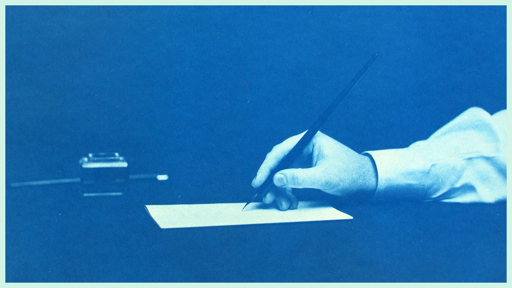

End Credits

To be grateful for this medium,
What a beautiful art.
Words linger,
Sometimes I find it difficult to start.
Look!
How the machines poisoned this craft.
False promises,
All I did was laugh.
And all it did was - resurrect my heart,
To get back to doing my part.
They tried buying it,
But this skill had no 'add to cart'.
Years of ink simply hitting the paper,
My thoughts had the courage to leave the draft.
So if the ship sinks - let it sink.
If the rope slips - I let it slip.
Still, I remain confident in my why,
I would never give up without a try.
As long as I live,
Let me articulate what I think.
Let me observe.
Let me learn.
Let me pick my words.
Let me figure out how all of this works.
So when my story finally ends,
Let them know I never gave in to trends.
A man of passion and heart who told his tale, no cuts, no edits.
Who wanted to be known simply by his own merits.
Credits
Image photographed by Thomas Smillie